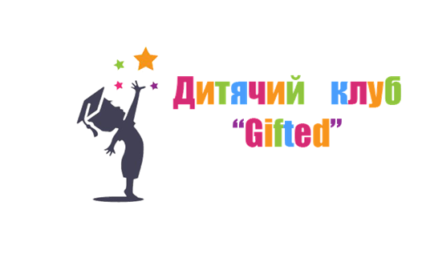

Дитячий клуб “Gifted” - це центр, у якому проводяться заняття з математики, логіки, основ інформатики та програмування, а також іноземних мов для дітей дошкільного та молодшого шкільного віку. Батьки зможуть приводити дітей на заняття у вільний від дитячого садку чи школи час, де вони навчатимуться за одним чи кількома напрямами. Відмінність між дитячим садком та центром розвитку полягає у кількості годин, які дитина проводить у навчальному закладі: у той час, коли у садку малюк знаходиться цілий день, грається, їсть та лягає на денний сон, у центр розвитку дитину приводять на декілька годин для розвиваючих занять.
